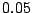
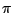
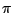

|
We develop methods and measures that help in judging the
sensitivity and selectivity of a profile under various conditions,
such as varying background composition and different sequence
lengths. Profile power can be as easily computed as significance
(p-values). We propose a method to choose score thresholds based on
both power and significance. We introduce several quality measures
for a profile and apply our findings to the TRANSFAC database of
transcription factor binding sites. The results are alarming: If we
insist on classically significant scores (p-value 
in sequences of length  ), only
), only  of the profiles can detect a true signal instance with
of the profiles can detect a true signal instance with
 success probability under varying
sequence composition.
success probability under varying
sequence composition.
A profile is a probabilistic description of a part of a
sequence, for example, of a TFBS. It specifies a probability
distribution over the alphabet's letters for each position. More
formally, a profile  of length
of length  is
a stochastic
is
a stochastic  matrix
matrix  .
.
For a sequence window  of length
of length  ,
we want to decide if
,
we want to decide if  is an occurrence of the
``signal''
is an occurrence of the
``signal''  , or is better described by the
``background''. The background is usually an i.i.d. model, that is,
a profile matrix , where each line
consists of the same probability vector . By the Neyman-Pearson lemma, we obtain the most
test when we use the log-odds score of
, or is better described by the
``background''. The background is usually an i.i.d. model, that is,
a profile matrix , where each line
consists of the same probability vector . By the Neyman-Pearson lemma, we obtain the most
test when we use the log-odds score of  , i.e.,
Score
, i.e.,
Score Prob
Prob Prob
Prob .
.
For fixed , we translate  into a score matrix
into a score matrix  by setting
by setting
 and rounding all
scores to a certain granularity
and rounding all
scores to a certain granularity
 (e.g.,
(e.g.,
 ). We obtain
Score
). We obtain
Score . A
value of
Score
. A
value of
Score is interpreted as strong
evidence for
is interpreted as strong
evidence for  being an instance of the
signal
being an instance of the
signal  .
.
The advantage of rounding is that the range of the scores
becomes a regular set
 , where
, where
 is the minimum and
is the minimum and
 the maximum possible score among
all windows of length
the maximum possible score among
all windows of length  .
.
We can compute the distribution of
Score on
on  under both the signal model (
under both the signal model ( generated
by
generated
by  ) and the background model (
) and the background model ( generated by ). In both
cases
Score
generated by ). In both
cases
Score is the sum of independent random
variables
is the sum of independent random
variables  ; therefore the
convolution of the their respective distributions gives the
distribution of
Score
; therefore the
convolution of the their respective distributions gives the
distribution of
Score [1]. Signal and background
distribution can be visualized and compared graphically.
[1]. Signal and background
distribution can be visualized and compared graphically.
![\includegraphics[width=0.8\textwidth,height=6cm,angle=0]{poster-03-068-fig01.eps}](img27.png)
The poster presents a ranking of all TRANSFAC [2] profiles according to
different quality measures for three different background models
(uniform, AT-rich, GC-rich). We find that many of the profiles in
the TRANSFAC database are of low quality in the sense that even in
a short sequence (length  ), type-II error and
type-I error (p-value) cannot both be kept below
), type-II error and
type-I error (p-value) cannot both be kept below  simultaneously for about two thirds of the profiles! Our
quality ranking has practical consequences: When scanning for
TFBSs, one should always look for the high-quality sites first.
simultaneously for about two thirds of the profiles! Our
quality ranking has practical consequences: When scanning for
TFBSs, one should always look for the high-quality sites first.